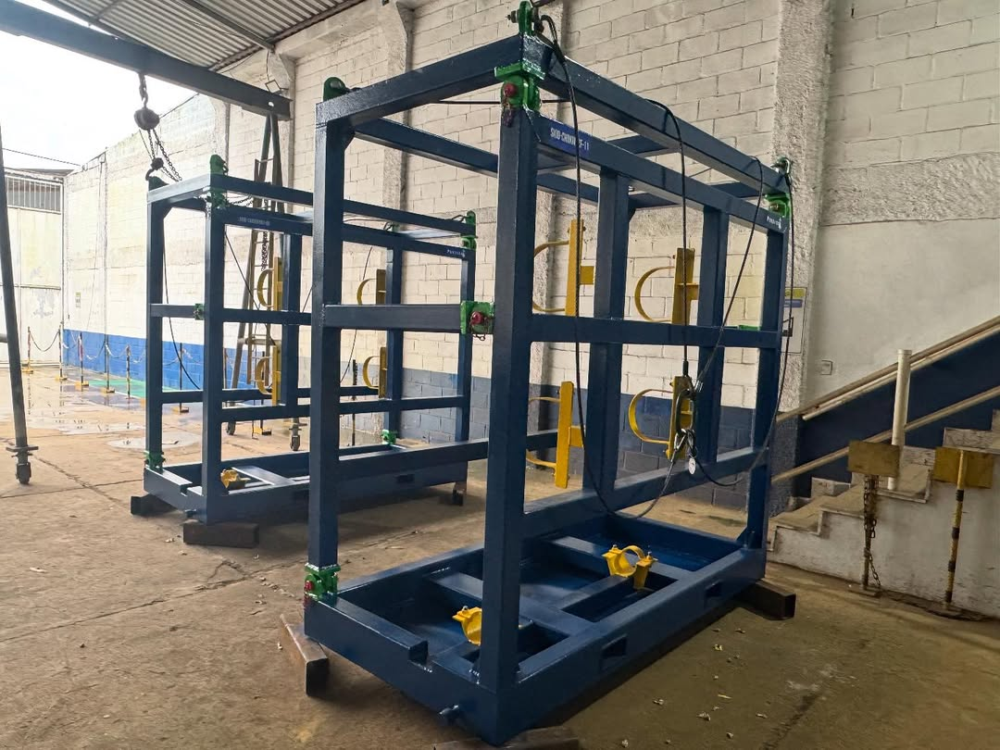
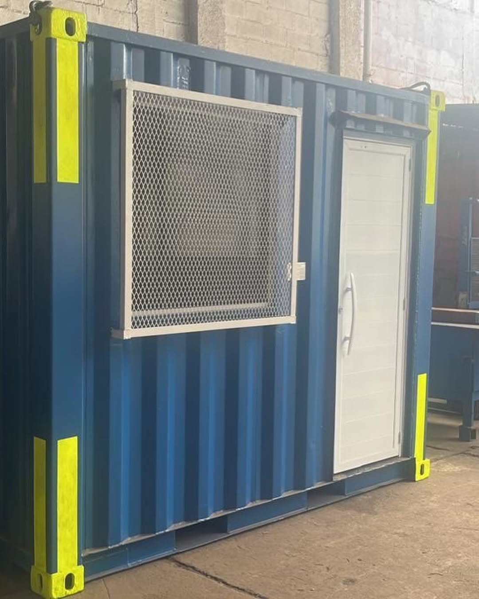
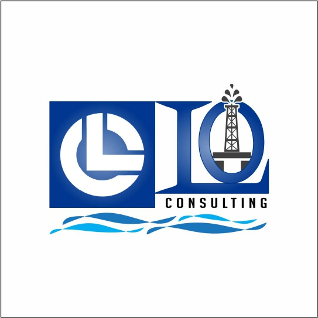
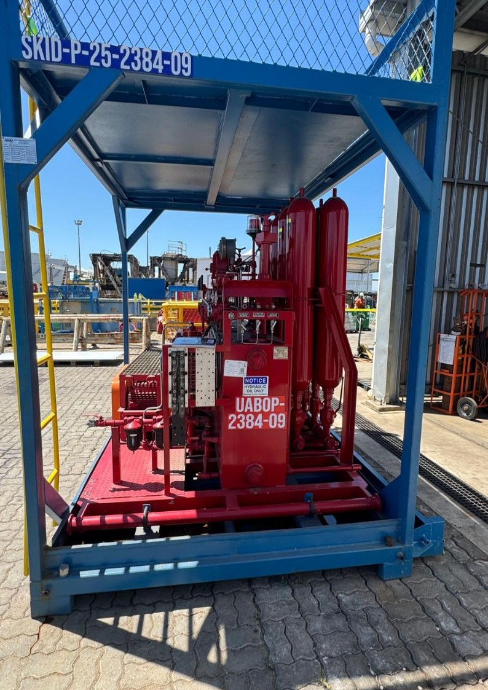
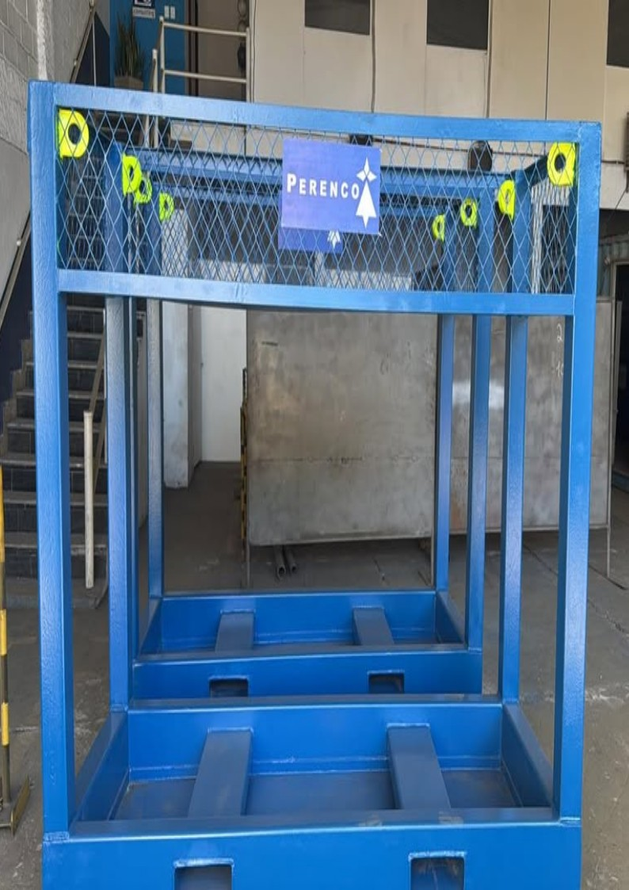
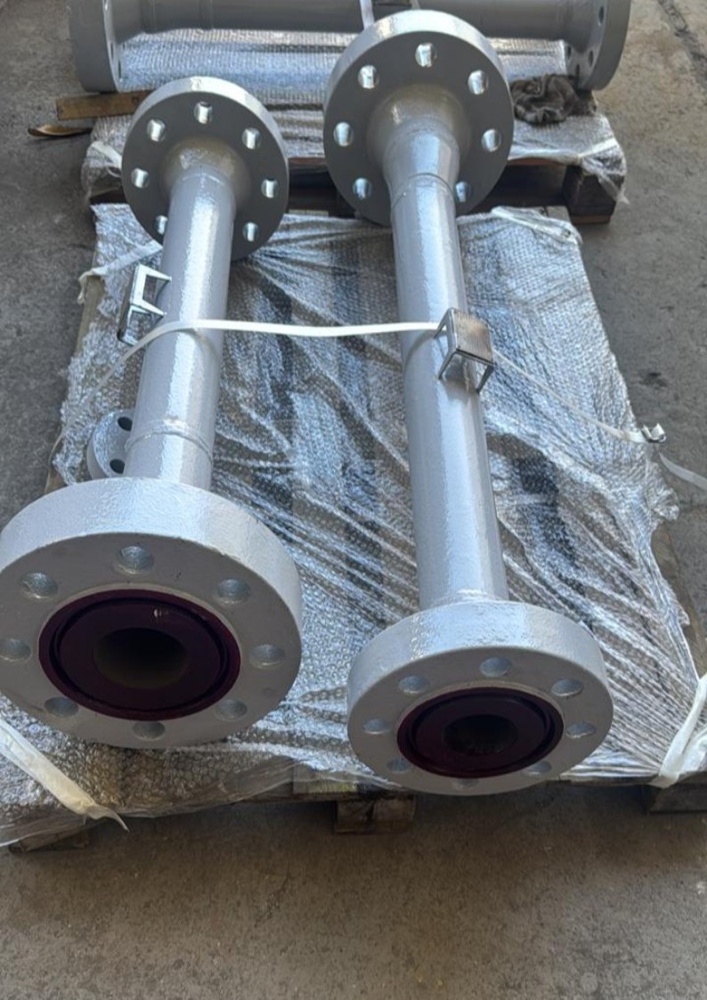
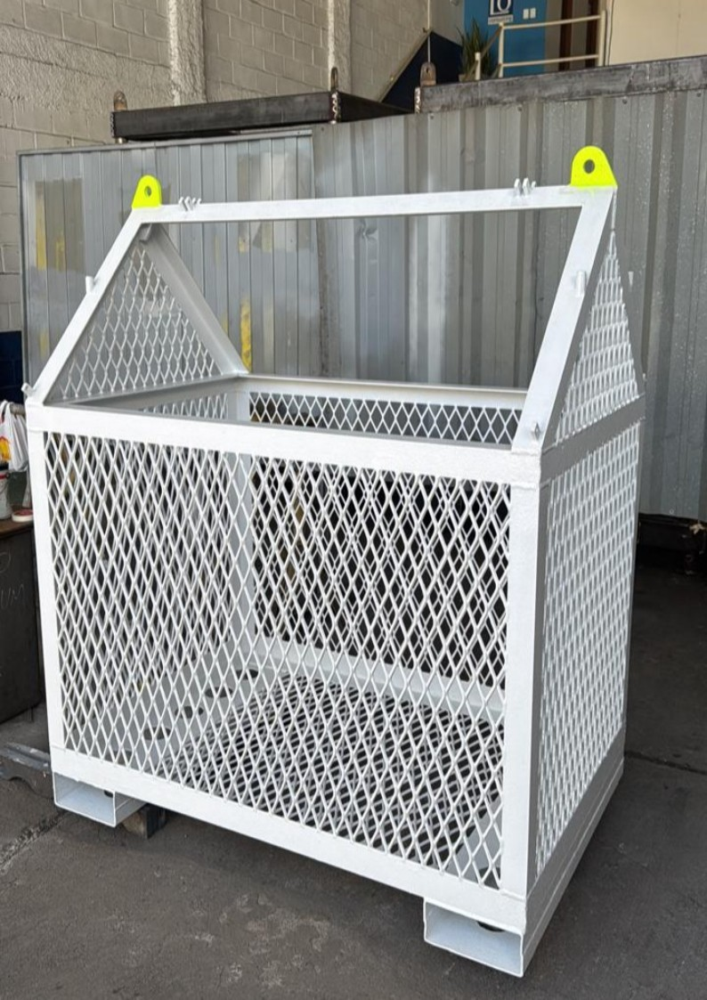

Comércio e Serviço




Engenharia, fornecimento de equipamentos e serviços especializados para operações onshore e offshore.
Conheça nossos serviçosA LO Consulting atua há mais de 15 anos no setor de óleo e gás, desenvolvendo projetos industriais e fabricando equipamentos para aplicações críticas na indústria energética.
A empresa oferece soluções sob medida para operações onshore e offshore, com foco em qualidade, segurança e eficiência operacional, seguindo padrões internacionais da indústria.
Anos de Experiência
Projetos Realizados
Clientes Atendidos

Produção de skids, módulos industriais e equipamentos para aplicações no setor de óleo e gás.
Projeto e fabricação de estruturas metálicas com alta resistência e proteção anticorrosiva.
Fabricação de spools industriais sob desenho técnico com controle rigoroso de qualidade.
Serviços de manutenção e recuperação de válvulas e equipamentos industriais.
Ensaios não destrutivos e inspeções técnicas para garantir segurança e confiabilidade.

Equipamento desenvolvido para controle de válvulas BOP em operações críticas.

Estrutura metálica reforçada desenvolvida para operações offshore.

Conjuntos com flanges para sistemas críticos com proteção anticorrosiva.

Equipamento para transporte seguro de materiais em ambientes industriais.